Research
Our research group is dedicated to building an interdisciplinary innovation hub where artificial intelligence serves as the core driving force, bridging computer science with bioinformatics, fintech, and computer vision. We aim to transcend traditional disciplinary boundaries, leveraging advanced AI techniques, from computer vision for high-precision pattern recognition to reinforcement learning for dynamic decision-making, to tackle complex challenges in bioinformatics, financial systems, and industrial applications.
News & Events
Our paper Dynamic Uncertainty-Aware Adjustment via Learnable Coefficients for 3D Reconstruction of Loose-Clothed Humans from Single Images got accepted by Pacific Graphics 2025 and selected as Computer Graphics Forum journal paper, July 2025
Our paper Identity-Preserving Facial Aesthetic Enhancement via Hierarchical Prompt Learning and Pivotal Tuning got accepted by ACM Multimedia 2025 , July 2025
Recent Publications

Identity-Preserving Facial Aesthetic Enhancement via Hierarchical Prompt Learning and Pivotal Tuning
Fangli Ying, Zhihong Zhang, Liting Zhou, Cathal Gurrin, Jinhai Wang
ACM Multimedia 2025

Enhancing Single-View 3D Clothed Human
Reconstruction with Hybrid Prior Integration
Fangli Ying, Yunze Li, Yadan Yang, Aniwat Phaphuangwittayakul and Riyad Dhuny
Computer graphics International 2025
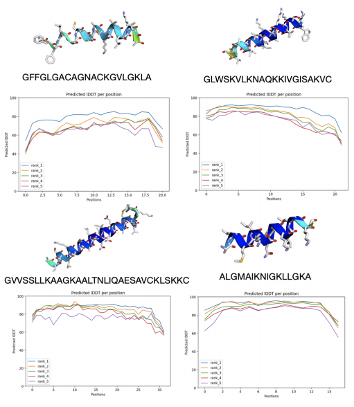
Computational Design of Potentially Multifunctional Antimicrobial Peptide Candidates via a Hybrid Generative Model
Fangli Ying, Wilten Go, Zilong Li, Chaoqian Ouyang, Aniwat Phaphuangwittayakul, Riyad Dhuny
International Journal of Molecular Sciences 2025

Enhancing Multimodal Video
Summarization via Temporal and Semantic Alignment
Fangli Ying, Ziyue Luo, Aniwat Phaphuangwittayakul
ICONIP 2024
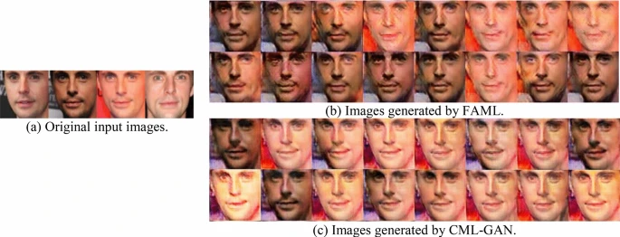
Few-shot image generation based on contrastive meta-learning generative adversarial network
Aniwat Phaphuangwittayakul, Fangli Ying, Yi Guo, Liting Zhou & Nopasit Chakpitak
Visual Computer 39, 4015–4028 (2023). https://doi.org/10.1007/s00371-022-02566-3
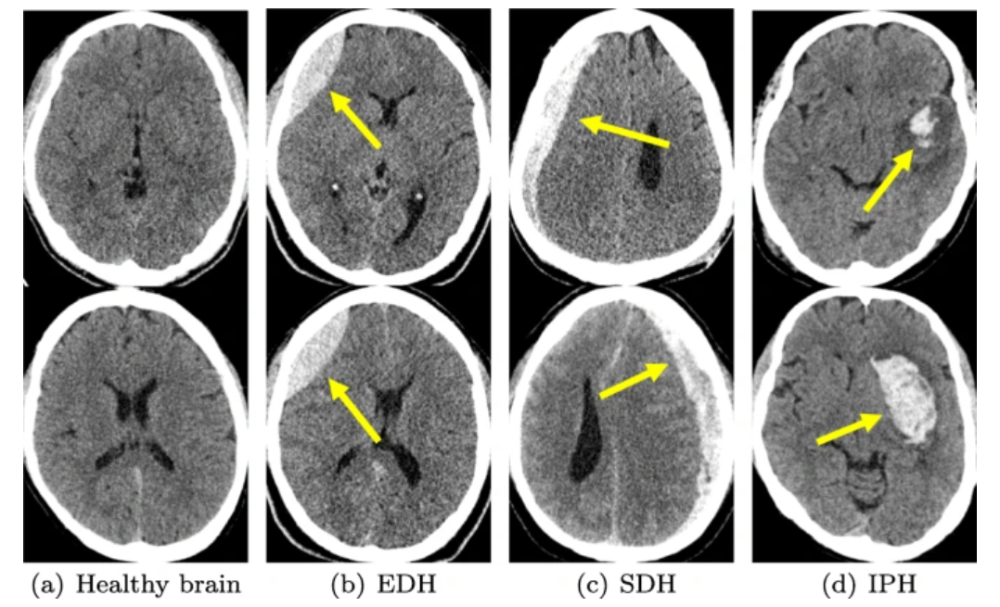
An optimal deep learning framework for multi-type hemorrhagic lesions detection and quantification in head CT images for traumatic brain injury
Aniwat Phaphuangwittayakul, Yi Guo, Fangli Ying, Ahmad Yahya Dawod, Salita Angkurawaranon & Chaisiri Angkurawaranon
Applied Intelligence 2022

Adaptive adversarial prototyping network for few-shot prototypical translation
Aniwat Phaphuangwittayakul, Fangli Ying, Yi Guo, Surachai Santisookrat
Journal of Visual Communication and Image Representation 2023

Self-Attention Recurrent Summarization Network with Reinforcement Learning for Video Summarization Task
Aniwat Phaphuangwittayakul, Yi Guo, Fangli Ying, Wentian Xu， Zheng Zheng
2021 IEEE International Conference on Multimedia and Expo (ICME)
Teaching
Introduction to Engineering
Dr. Fangli Ying, 本科生课程 in ECUST, 2022,2023,2024,2025
Deep Learning 2023(深度学习)
Dr. Fangli Ying, 研究生课程 in ECUST, 2023,2024,2025
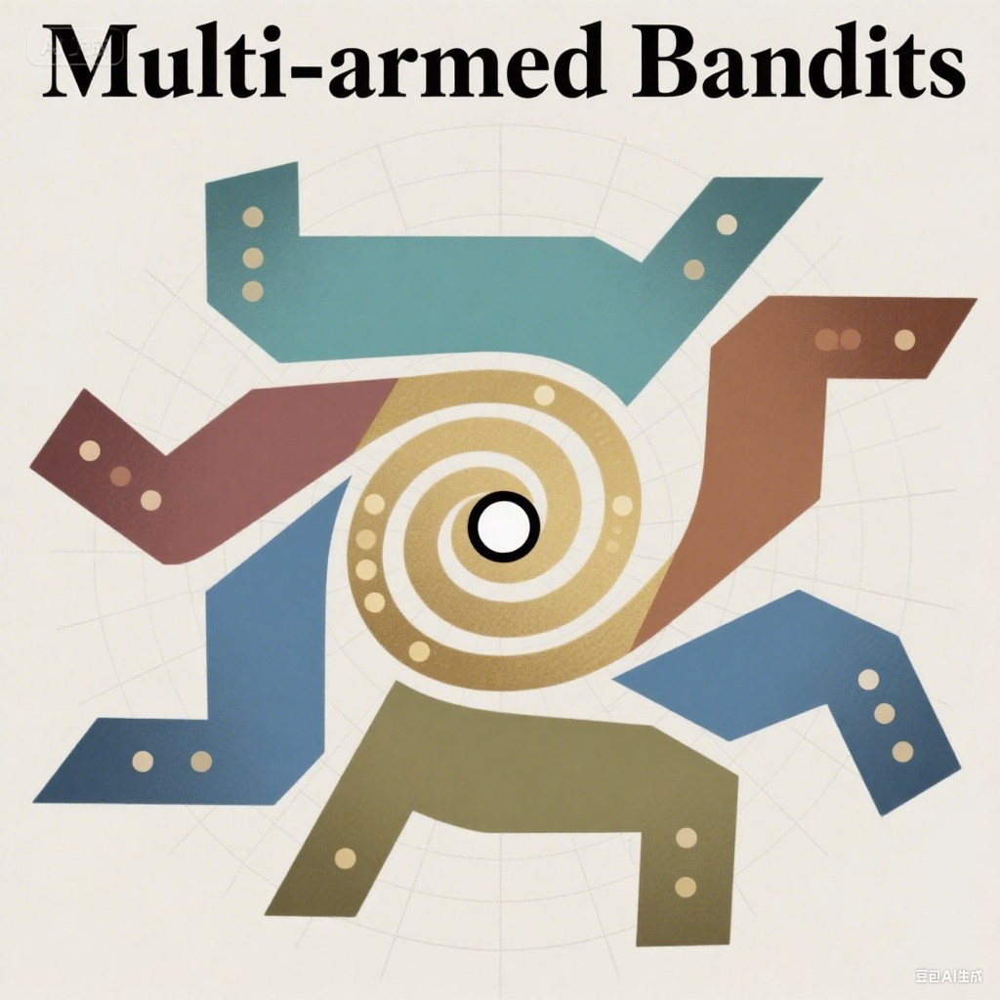
Multi-Armed Bandits
Dr. Fangli Ying & Prof. Osman Yağan, iHub Summer Camp, 2024,2025
Team Members
Group meetings and industrial meetings
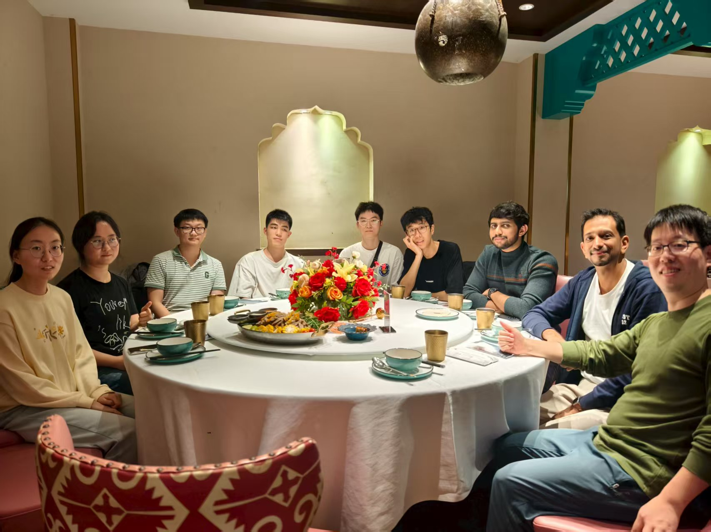
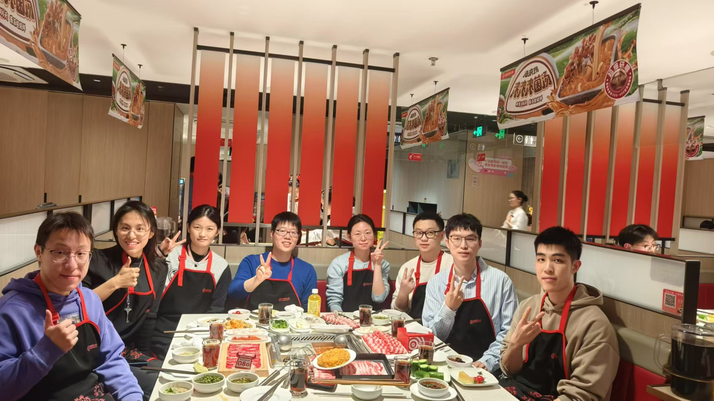
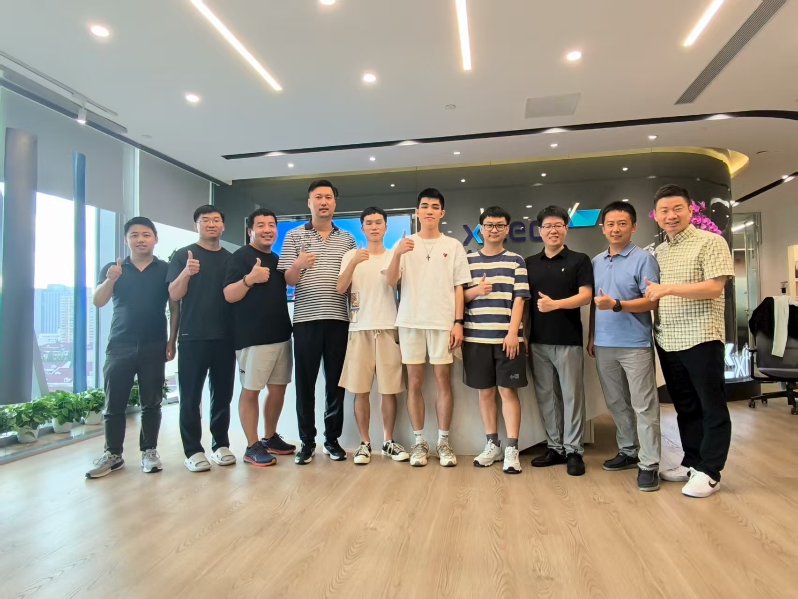
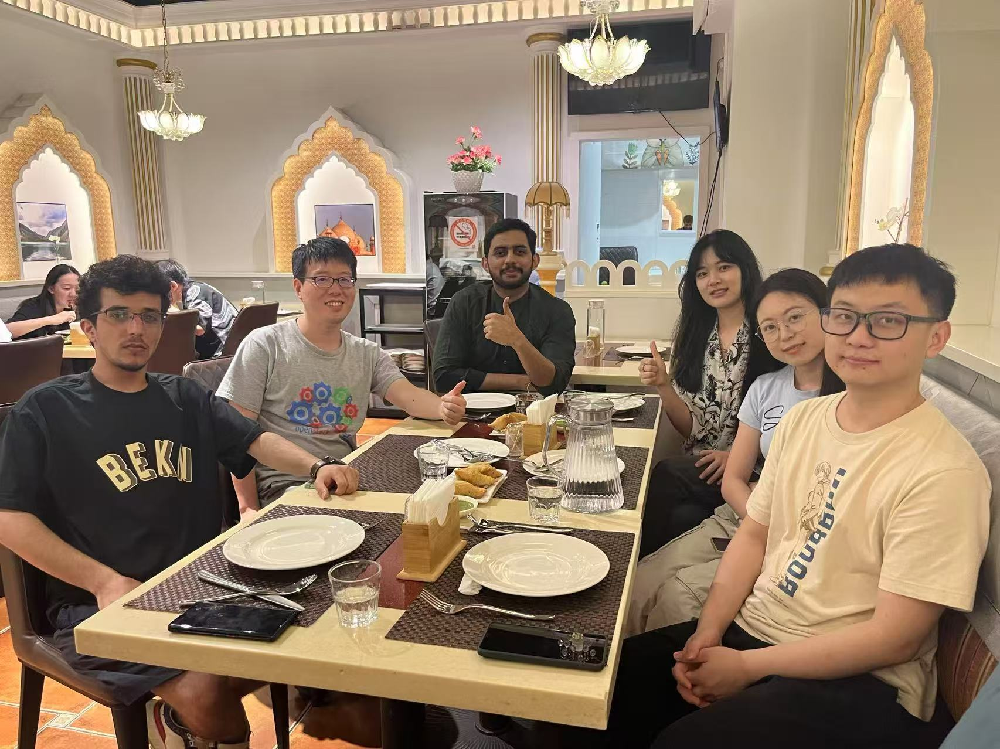
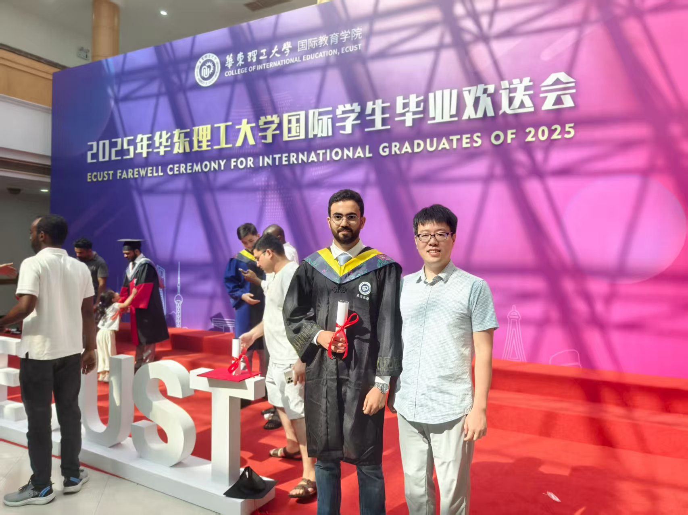
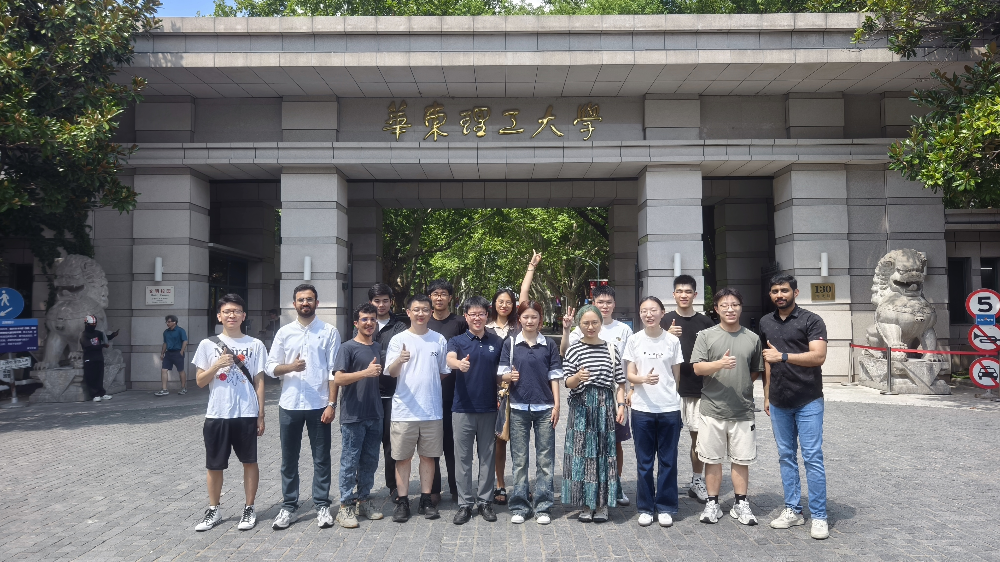
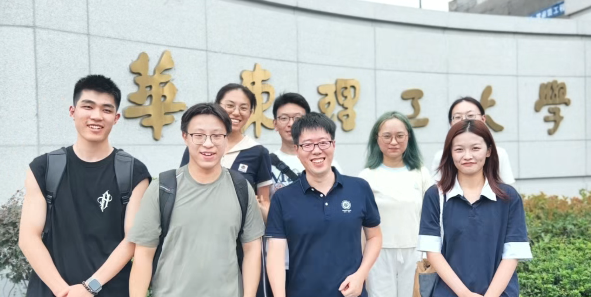
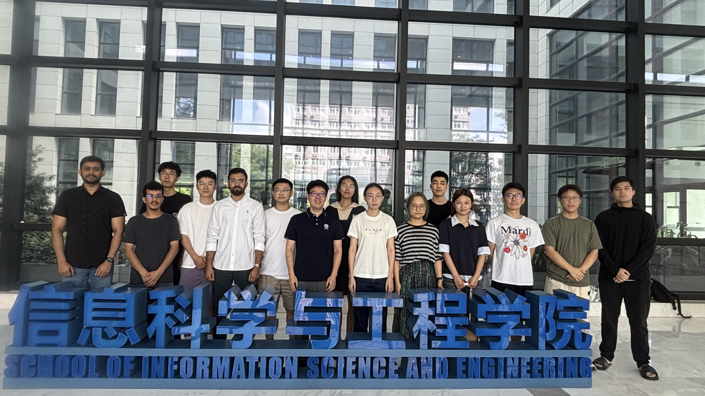
Current Master Students
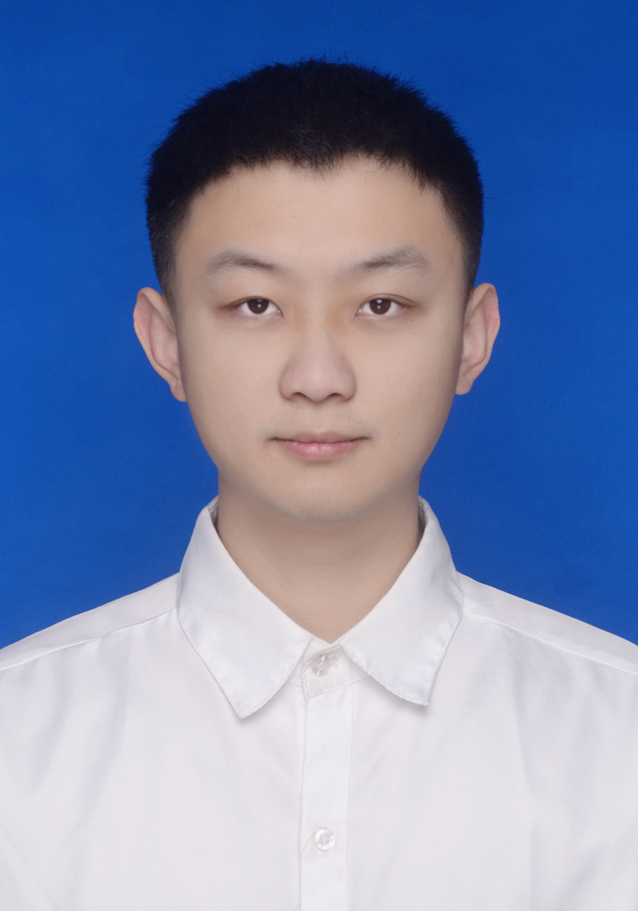
Yuanhao Li

Wilten Go
Mahzaib Khalid
Ahmed Mohammed Atef Al-Garadi
Zhihong Zhang
Guoqiang Yang
Zilong Li
Yadan Yang
Lijuan Zhou
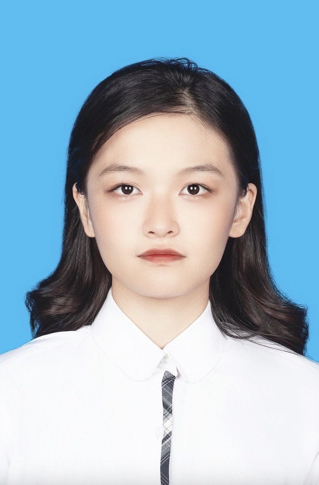
Yushan Li
Yuanhao Li
Yuhao Zhang
Xinyu Gao
ELIAS TARIQ MOHAMMED AHMED QAID
Alumni
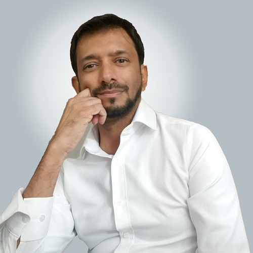
Dr. Riyad Dhuny
Senior Lecturer at University of Technology, Mauritius
Visiting ECUST during 2025
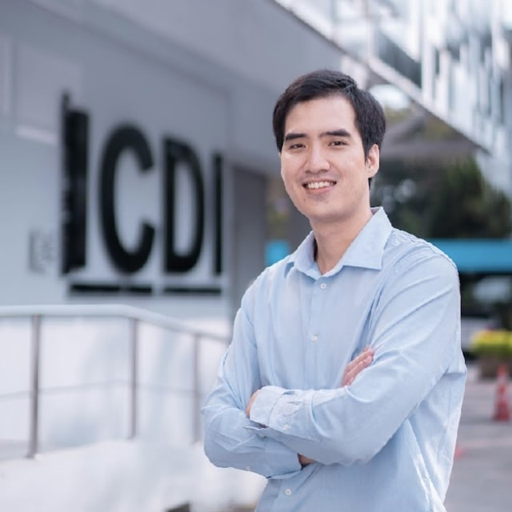
Dr. Aniwat Phaphuangwittayakul
Lecturer in ICDI Chiangmai University
Previous Ph.D student in ECUST
Dr. Irina Lebedeva
Senior AI engineer at Docler Holding in Budapest
Previous Ph.D student in ECUST
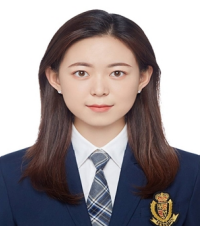
Ru Fan
SoftwareTesting engineer in HuaWei
Previous Master student in ECUST
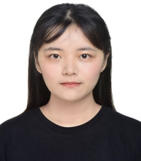
Ziyue Luo
Software Developer in MeiTuan
Previous Master student in ECUST